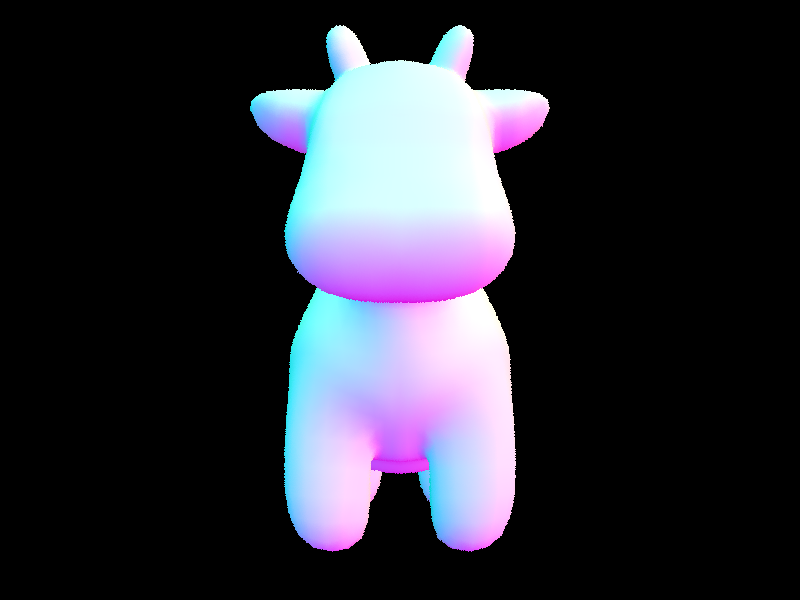

|
|
|
We implement the basic lighting rendering pipelines starting from ray generation and scene intersection to better sampling and lighting techniques.
c2w in camera.h) and create a Ray object using the current position of the camera and
unit vector of our new 3D object. Set the bounds of our ray (min_t, max_t) to our clipping planes
nClip and fClip.
We then uniformly sample from the provided pixel coordinate num_samples times, each time generating a ray adding
the estimated radiance given the est_radiance_global_illumination function to the overall radiance. We use a
MC estimator that is the radiance per sample and update our pixel in our sample buffer with this value. Set the sample count buffer at \(x + y * width \) to the number of samples.
has_intersection function that takes in a ray \(r \) an returns a boolean if that ray intersects a triangle.
This calculates a multitude of values listed below:
\[t = \frac{((\text ray \space \text origin - p_1) \times (p_2 - p_1)) \cdot (p_3 - p_1)}{(\text ray \space \text direction \times (p_3 - p_1)) \cdot (p_2 - p_1)} \]
\[b_1 = \frac{(\text ray \space \text direction \times (p_3 - p_1)) \cdot (\text ray \space \text origin - p_1)}{(\text ray \space \text direction \times (p_3 - p_1)) \cdot (p_2 - p_1)} \]
\[b_2 = \frac{(\text ray \space \text origin \times (p_2 - p_1)) \cdot \text ray \space \text direction}{(\text ray \space \text direction \times (p_3 - p_1)) \cdot (p_2 - p_1)} \]
\[b_0 = 1 - b_1 - b_2 \]
where \(p \) are the vertices off the triangle. These values derive from the Möller–Trumbore intersection algorithm. If the \(t \) value
is not within bounds of the ray or the values of \(b \) are outside the range \([0,1] \) we return false.
The intersection function sets our max_t of the ray to this \(t \) value if it does not intersect. Additionally an intersection object is
set such that the \(t \) value is the found \(t \) value, the normal at point of intersection is unit vector of the weighted sum of \(b \) values, the primitive is the triangle, and the bsdf is found.
intersect does this check again and sets the values of max_t of the ray to the minimum value, sets \(t \) to \(t_1 \),
sets \(n \) to the unit vector of \(\text ray \space \text origin + (\text minimum \space \text t)* \text ray \space \text direction - \text sphere \space \text origin\) and the bsdf.
The Moller Trumbore Algorithm is the driving algorithm we used for our implementation. It starts by finding two vectors that represent two sides of the triangle, then calculates a perpendicular vector to the ray and one of the triangle's sides. By using some math, it checks if the ray and the triangle are likely to intersect, and if they're not parallel, it finds where they cross paths. Next, it ensures that this intersection point is actually inside the triangle. Finally, it confirms that this intersection point is in front of the ray's starting point.

|

|

|

|
Our BVH construction algorithm consists of three major steps: constructing the BVH, intersecting the bounding box, and intersecting the BVH.
BVHNode If there are no more than max_leaf_size primitives in the list, the node we just
created is a leaf node and we should update its start and end iterators appropriately. This check is our base case. Otherwise, we need to divide the primitives into a "left" and "right" collection.
To do this, we first split along all of the axises (X,Y,Z) by comparing the centroid of each primitive to the centroid of the bounding box we found earlier.
Then create a heuristic that selects the axis giving us the most benefit. This is simply if the product of
an axis's left and right values is greater than another.
We then partition the array so that elements of the left child are placed on the left and all of the elements of the right child are place on the right.
We recursively call this function to do this again until we reach our base case.
You can think of this similar to merge sort or a divide and conquer approach.
|
|

|
|
|
|
In complex figures, when rendering CBLucy.dae with BVH acceleration, BVH traced 287604 rays with an average speed of 1.5787 million rays per second and averaging 2.445074 intersection tests per ray.
Without BVH acceleration, BVH traced 295980 rays, an average speed 1.5194 million rays per second and averaged 2.395236 intersection tests per ray.
In less complex figures, when rendering teapot.dae with BVH acceleration, BVH traced 290328 rays with and average speed 1.7142 million rays per second and averaging 5.722404 intersection tests per ray.
Without BVH acceleration in less complex figures, when rendering teapot.dae without BVH acceleration, BVH traced 278633 rays with an average speed of 1.6659 million rays per second and averaging 5.794755 intersection tests per ray.
Comparing the two techniques, BVH acceleration we had more intersections and rays per second than without BVH acceleration. However we do trace more rays without the optimization technique.
Direct lighting has two modes in this assignment, with uniform hemisphere sampling or importance sampling. Before those we have to provide the capability to
diffuse material that reflects incoming light equally in all directions.
We First Implemented the f function to return the reflectance given the \(w_o \) and \(w_i \), the outgoing light direction and incoming light direction.
Since this is uniform, we just have to just return \(\frac{reflectance}{2 \pi} \). We then implement zero-bounce illumination,
which is when the light does not bounce off anything in the scene and is only the light that comes from the light source itself.
This function takes in a ray and an intersection object and simply (in our case) return the emission of the bsect of the intersection. We now are split into two parts
Uniform Hemisphere Sampling and Importance Sampling.
estimate_direct_lighting_hemisphere takes in a ray and an intersection and returns the pathtracing vector. Utilizing the global \(L \) value, we add to this
sampling \(n \) times.
In this function we sample the incoming light direction from a hemisphereSampler object and create a new ray where the origin is at hit_p, the direction at the sampled direction put into a 3x3 matrix, and a depth of the ray - 1.
We set the min_t of this ray to EPS_F. Using the intersection, we find the BSDF using w_out and w_i.
If the new ray intersects the BVH, our light is emission of the new intersection, otherwise its the sample direction of the new ray. Using the retrieved values we can add the following to our Light:
\[BSDF*L_i*(\text intersecion \space \text normal \cdot \text new \space \text ray \space \text direction) * 2\]
After sampling, we weight our light out by \(\frac{2 \pi}{samples} \) since we are in a hemisphere. We modify est_radiance_global_illumination to add a one bounce radiance to our zero bounce and have the one bounce radiance return the
estimate_direct_lighting_hemisphere function we made. This is later changed to check if our direct_hemisphere_sample boolean is set to treu to use, otherwise we use importance sampling.
estimate_direct_lighting_importance function is very different, for each light we check if the light is a delta light.
If it is, we increment \(L \) by the following:
\[\frac{BSDF*L_i*(\text intersection \space \text normal \cdot \text new \space \text ray \space \text direction)}{2*pdf} \]
This is similar to the uniform hemisphere function but rather the we sample from the light rather than the hemisphere sampler and default to it if the new ray does not intersect our primitive. The max_t of our new ray is the dist_to_light - EPS_F.
If we are not a delta light, we sample ns_area_light times with the sample_L function like before and just get the mean sample.
| Uniform Hemisphere Sampling | Light Sampling |
|---|---|
|
|
|
|
|
|
|
|
|
|
|
|
Increasing the light rays decreases the noise, but as we become greater the visual improvement becomes harder to classify.
Uniform Hemisphere sampling provides a grainier render than lighting sampling. This is becuase uniform hemisphere sampling utilizes an unbiased approach to global illumination. On the other hand, direct render sampling samples from the lights and uses some average of the light or a more intelligent calculation to determine light values. We also render more around the light, ignoring darker spots.
We first implemented sample_f which samples the incoming direction \(w_i \) from the provided pdf using the get_sample function
and then calls and returns the f function that we implemented in part 3. Then we implement the
at_least_one_bounce_radiance function to return the light given the depth. If our depth is 1, we can just return the
output of the one_bounce_radiance function. We have to first generate a ray and calculate the radiance. If the new ray intersects the bvh,
we can recrusively call the one_bounce_radiance function and add it to the light based on the following function (this is similar to part 3):
\[\frac{BSDF*L_i*(\text intersecion \space \text normal \cdot \text new \space \text ray \space \text direction)}{pdf}\]. Using the
russian roulette technique, we can use the probability \(0.3 \) for chance of bouncing. If the new ray intersects
we check if the depth of the ray is the max depth or one less than the max depth. If so, we can recursively call at_least_one_bounce_radiance and add the result in the following way:
\[\frac{BSDF*L_i*(\text intersecion \space \text normal \cdot \text new \space \text ray \space \text direction)}{pdf * 2}\]
Otherwise, we call add the result this way:
\[\frac{\frac{BSDF*L_i*(\text intersecion \space \text normal \cdot \text new \space \text ray \space \text direction)}{pdf}}{0.6}\]
The 0.6 is just the russian roullette probability 0.3 multiplied by 2.
|
|
|
|
|
|
In only indirect illumination, the light at the top of the scene is absent because it is considers an indirect light source but light coming from the walls or the objects appear. On the other hand, the lighting in only direct illumination only shows the light coming from the top and none from reflections.

|
|
|
|
|
|
|
|
In 2 and 3 we see reflectance from the floor and walls onto the bunny, this produces more of the global illumination that we are looking for.
|
|
|
|
|
|
|
|
The quality of the shadows are not as intense as the rays increase.
|
|
|
|
|
|
|
|
|
|
|
As we increase the samples, we lose the grain from the photos.
Adaptive sampling is a technique used in computer graphics, particularly in rendering, to
intelligently allocate computational resources for generating images.
Instead of uniformly sampling every pixel in an image, adaptive sampling adjusts the sampling rate based on certain criteria,
such as the complexity of the scene or the level of detail required. This approach aims to focus computational
effort where it is most needed, improving the efficiency of the rendering process while maintaining image quality. In our
implementation, we iterate \(\frac{numSamples}{samplesPerBatch} \) times.The \(s_1 \) and \(s_2 \) values are the illumination of the est radiance and the squared illumination of the est radiance.
We generate a ray by turning a sampled pixel to image space and calling generate_ray. We have to set the depth of this ray to the maximum ray depth. Using
est_radiance_global_illumination on the ray, we can generate the estimated radiance and add this to the overall raiance.Each time checking if the following holds:
\[mean = \frac{s_1}{samples} \]
\[var = \frac{\frac{s_2 - s_1 ^ 2}{samples}}{samples - 1} \]
\[\frac{1.96*\sqrt{var}}{\sqrt{samples}} \leq maxTolerance*mean\]
If this check holds, we can prematurely stop sampling. The estimated radiance become the average of the overall radiance per sample. Like before, we update the pixel with the
estimated radiance and set the \(x + y*width \) value to the number of samples.
|
|

|
|
|
|